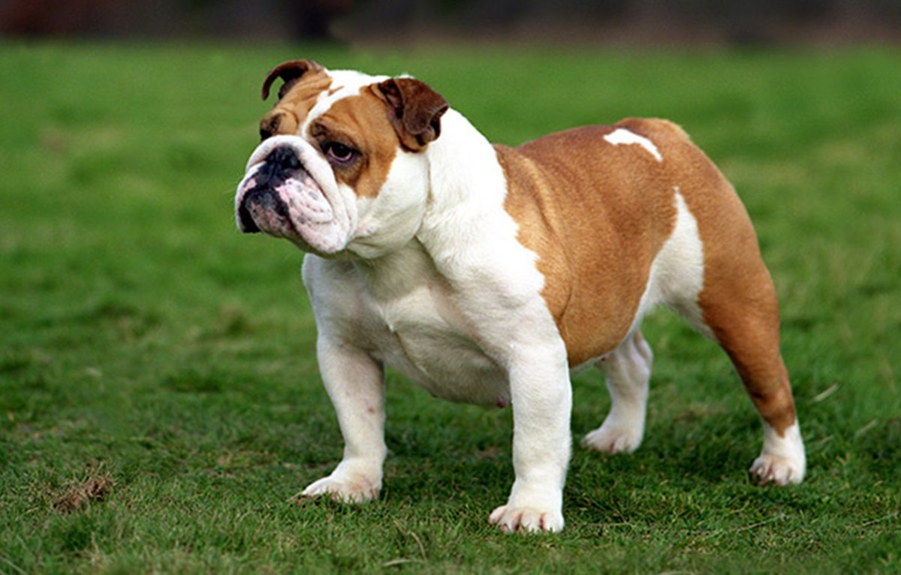
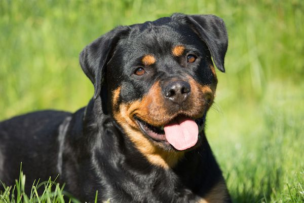

Labrador Retriever was the most popular one. They are really active, friendly and outgoing. They are really energetic. They look super cute! I love them. (I love all kinds of dogs!) In the picture there are three different color of them, and I want all of them!!
French Bulldogs
French Bulldogs was the 2nd most popular one. They look upset. They are a small kind of dogs. Probably not so much hair problem which is good in the apartment. I want to see them more happy!
Golden Retriever
Golden Retriever was the 3rd most popular one. I have to admit thet actually they are my favourites. I wish I have one :(. I always wanted a Golden Retriever. They are outgoing, super friendly and the best!
German Shepherd Dogs
German Shepherd Dogs was the 4th most popular one. I love them. They look super cute. Look at that!
Poodles
Poodles was the 5th most popular one. Aww! I just want to cuddle them. Their hair look super soft!!
Bulldogs
Bulldogs was the 6th most popular one. Another angry guy! Still, definitely deserves to be on top 10 most popular dog. They are sooooo cute!

Beagles
Beagles was the 7th most popular one. Look at that smile!!! They are small and super cute! The prettiest!
Rottweilers
Rottweilers was the 8th most popular one. Oh! One of my friend has a Rottweiler, and he is one of my favourite. He believes he is still a baby and acts like that. He is in love with me, and I am in love with him...

German Shorthaired Pointer
German Shorthaired Pointer was the 9th most popular one. When I was a kid, those looked like the scarriest dogs in the world! I can't believe that I thought that. They are adorable!
Dachshunds
Dachshunds was the 10th most popular one. I never heard their name but saw lots of them until preparing this website. I love them too!! They look amazing!!